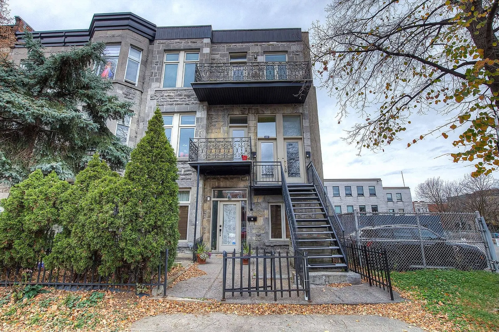
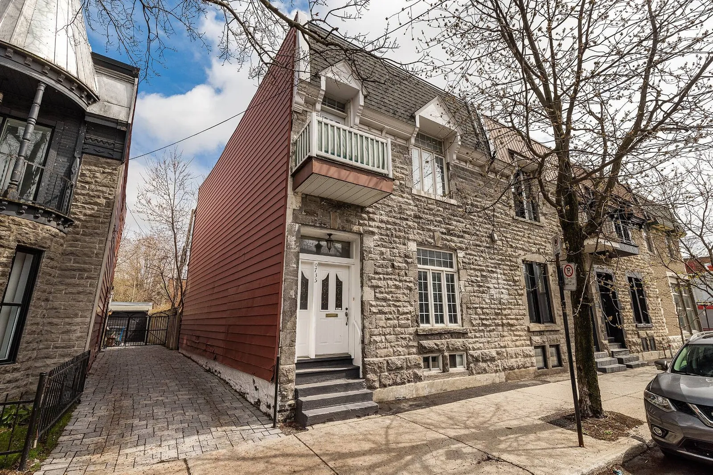
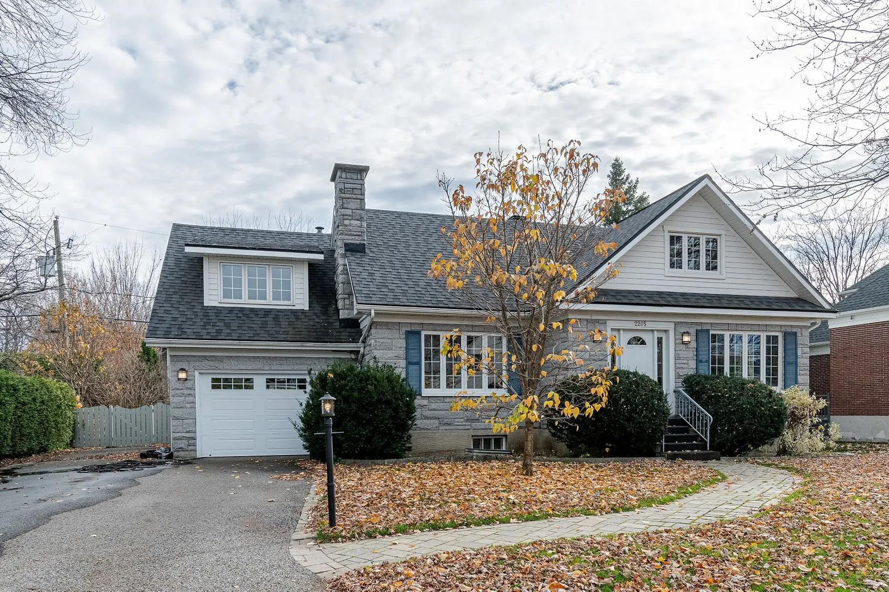

| Maisons | Description | Cout | Localisation |
|---|---|---|---|
|  | Magnifique duplex en brique parfaitement situé dans un quartier calme de Montréal. Situé en face d'un parc, entouré d'arbres matures, l'emplacement d'angle du bâtiment le baigne de lumière sur trois côtés. Très bien entretenu, avec un garage pour deux voitures et une belle terrasse. Les deux unités sont louées jusqu'en juillet. À voir absolument ! | 799 000 $ | 285 Boul. St-Joseph O. Montreal, Quebec, H2V2N8 Canada |
|  | Élégante maison de ville située au cœur de Point St-Charles. Restaurée avec un soin impeccable, elle dispose de trois chambres complètes et d'un grand bureau en plus d'un sous-sol de 6 pieds. Les hauts plafonds, les murs de briques apparentes et le charmant travail du bois ne sont que quelques-unes des caractéristiques que vous pouvez attendre de cette ravissante maison. Mignon patio et cour arrière privée. À voir absolument ! | 865 000 $ | 735 Rue Charlevoix Montreal, Quebec, H3K2Y3 Canada |
|  | Magnifique propriété située sur l'une des plus belles rues de la ville de Québec. Très grand terrain paysagé et intime avec haie de cèdres et piscine creusée. Parfaite pour une grande famille : 5 chambres, 2 salles de bain complètes et 2 salles d'eau. Proche des écoles, des principales autoroutes, des services et de la rue Maguire. | 798 000 $ | 2205 Rue Brulart Quebec, Quebec, G1T1G2 Canada |